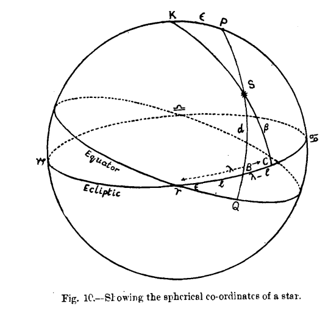

THE APPARENT PATH OF THE SUN IN THE SKY
The apparent path of the sun in the sky is known in astronomical language as the ecliptic. It is a great circle cutting the celestial equator at an angle of ca 23.5° (exactly 23° 26’ 43" in 1955, but the angle varies from 22° 35’ to 24° 13’). This is known as the obliquity of the ecliptic.
The ecliptic is the most important reference circle in the heavens, and let us see how a knowledge of it was obtained in ancient times.
It is obvious that a knowledge of the stars marking the sun’s path could not be obtained directly as in the case of the moon ; for when the sun is up, not even the brightest stars are visible. The knowledge must have been obtained indirectly. Early observers were accustomed to observe the heliacal rising of stars, i.e., observe the brilliant stars lying close to the sun which are on the horizon just before sunrise. This must have given them a rough idea of the stars lying close to .the sun’s path. From these observations, as well as from successive appearances of the moon on the first days of the month as narrated in § 4:1, they must have also deduced that the sun was slipping from the west to the east with reference to the fixed stars, and completing a revolution in one year. But how was this path rigorously fixed ?
It appears that a knowledge of the stars lying on, or close to the moon’s path was obtained from observations made during lunar, rarely of solar eclipses.
They must have realized, as narrated in § 4.2, that during a total lunar eclipse, the moon occupies a position in the heavens opposite the sun, and the stars close to the moon, which become visible during totality, approximately mark out points on the sun’s path. So the word ‘Ecliptic’ which means the locus of eclipses, came to denote the sun’s path.
The two points of intersection of the ecliptic with the celestial equator are called respectively the First point of Aries, and the First point of Libra. The first point of Aries is the ascending node, when the sun passes from the south to the north; the first point of Libra is the descending node, when the sun passes from the north to the south. We have vernal equinox when the sun is at the first point of Aries, summer solstice when the sun is at the first point of Cancer, autumnal equinox when the sun is at the first point of Libra, and winter solstice when the sun is at the first point of Capricorn. To the origin of nomenclature, we return later.
The celestial equator and the ecliptic are the most important reference planes in astronomy. The positions of all heavenly bodies are given in terms of these planes, taking the first point of Aries as the initial point. We explain below the scientific definitions of spherical co-ordinates used to denote the position of a body on the celestial globe.
{kind=link}

In this figure :
- P = Celestial pole (dhruva).
- γQ - Celestial equator.
- K - Pole of the ecliptic (kadamba).
- γ♋ = Plane of the ecliptic.
- γ = First point of Aries (vernal equinox).
- ♋ = First point of Cancer: (summer solstice).
- ♎ = First point of Libra (autumnal equinox).
- ♑ = First point of Capricorn (winter solstice).
- Ś = A heavenly body.
- PS - Great circle throʻ P,S cutting equator at Q.
- γQ - Right ascension=α.
- QS - Declination= δ
- KS - Great circle through K,S cutting ecliptic at C.
- TC-Celestial longitude λ
- CS=Celestial latitude = β
Let PS cut the ecliptic at B. Then
- γB = Polar longitude or dhruvaka = l
- BS = Polar latitude or vikṣepa = d
These last two peculiar co-ordinates, now no long used, were used by the Sūrya Siddhānta to denote sta positions. They have been traced by Neugebauer to Hipparchos five centuries earlier.
The position of a stellar body may be defined by either its right ascension (α) and declination (δ), or its celestial longitude(λ) and latitude(β).
The positions of stars in these co-ordinates began to be given from the time of Claudius Ptolemy (150 A.D.) who used them in his Syntaxis.